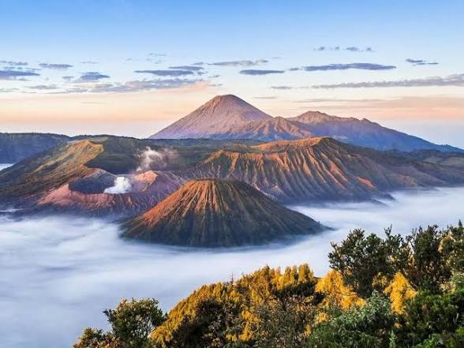
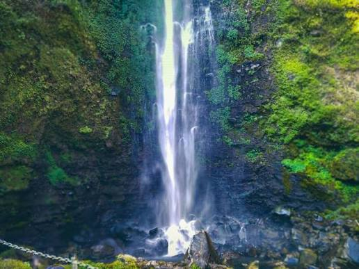

| Beranda | Menu Wisata | Website Pariwisata |
Jelajahi Indonesia bersama MaiA
Selamat datang di Indonesia, jelajahi dengan leluasa dan nikmati perjalanan yang nyaman dan berkesan.
contact Person : Jelajah Wisata +6287111
| Beranda | Menu Wisata | Website Pariwisata |
Selamat datang di Indonesia, jelajahi dengan leluasa dan nikmati perjalanan yang nyaman dan berkesan.
contact Person : Jelajah Wisata +6287111
| Beranda | Menu Wisata | Website Pariwisata |
Berikut adalah objek wisata menarik di Jawa Timur
Berikut adalah objek wisata menarik di Jawa Timur
|
 Gunung Bromo Gunung Bromo merupakan salah satu tempat wisata terkenal yang berada di Jawa Timur. |
Kawah Ijen Kawah Ijen merupakan salah satu tempat wisata terkenal yang berada di Jawa Timur. |
 Air Terjun Coban Rondo Air Terjun Coban Rondo merupakan salah satu tempat wisata terkenal yang berada di Jawa Timur. |
contact Person : Jelajah Wisata +6287111
| Beranda | Menu Wisata | Website Pariwisata |
Kunjungi website resmi pariwisata Indonesia:
contact Person : Jelajah Wisata +6287111